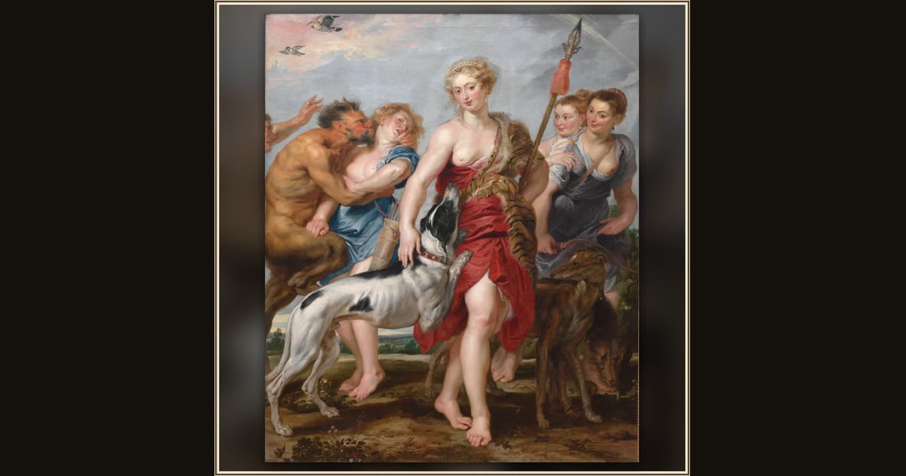

Diana and Her Nymphs Departing for the Hunt
Peter Paul Rubens (Flemish, 1577–1640); Workshop · c. 1615 · cma
Diana carries a hunting spear as hounds gather around her and attendants follow; the hymn names Artemis as the goddess who cheers on hounds (1). Explore its place in Homer's The Homeric Hymns, Hymn 27 · To Artemis, line 1.